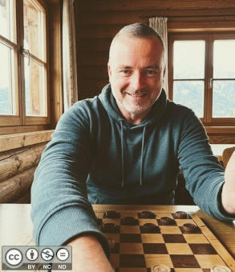

Rules
Buff and Green is a two-player strategy game – American Checkers played on an 8x8 board.
Goal
Win by capturing all opposing pieces or blocking the opponent from making a legal move.
Regular pieces move diagonally forward to an adjacent green square; kings move diagonally in both directions and use long moves by default.
Play takes place on the green squares.
The board orientation uses a buff square at the bottom-right corner for each player.
Red player moves first.
Turn Sequence
- Choose one of your movable pieces.
- Move diagonally to a legal destination square, or jump an opposing piece to capture it.
- If a capture is available, it must be played. Multi-jumps continue in the same turn until no further capture is possible for that piece.
- If several capture paths are available, you may choose any of them; the longest path is not forced.
Capture Options
Capturing is mandatory for all pieces.
Normal unpromoted pieces capture forward and backward by default. In Options, switch off Allow backward capture to limit them to forward captures only.
Only one adjacent opposing piece can be captured at a time, and a captured piece is removed immediately before any continued jump is evaluated.
King Movement and Promotion
By default kings may move any distance diagonally across empty squares.
By default king captures may start after sliding across empty diagonal squares to the first opposing piece; the king then lands on the adjacent free square directly behind that piece.
In Options, switch off Allow long jumps for kings to limit kings to adjacent diagonal moves and adjacent captures.
A piece reaching the far side is promoted after the move finishes. During a capture chain, a checker must complete any remaining checker captures before promotion applies.
Draws and End of Game
A draw is declared after 80 half-moves without a capture or a promotion.
When a game ends, open the menu and choose New Game to start again.
Options
Changes take effect immediately on AI turns and on new games.
About Buff and Green
Legal

Copyright © 2016, 2026
@author Oliver Merkel, Merkel(dot)Oliver(at)web(dot)de.
All rights reserved. Logos, brands, and trademarks belong to their respective owners.
All source code (HTML, JavaScript, CSS) is released under the MIT License.
Images are licensed under Creative Commons Attribution-NonCommercial-ShareAlike 4.0 International License .
Third-party Code Licenses
This version uses no third-party libraries.
The AI engine uses the UCT / MCTS algorithm.